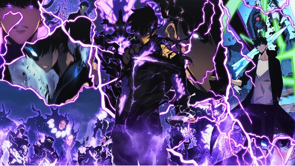

Notícias
Mar 18, 2024 4:27 PM
Anime de Solo Leveling: Novidades Reveladas em Antecipação ao Lançamento
O anime de Solo Leveling está prestes a receber novidades emocionantes, anunciadas pelo perfil oficial da série. Saiba mais sobre o que esperar do aguardado lançamento do anime, baseado na popular novela coreana de Chu-Gong, que conquistou fãs ao redor do mundo.

O perfil oficial de Solo Leveling deixou os fãs animados ao anunciar que o anime receberá novidades nesta terça-feira (21). Embora o conteúdo exato do anúncio ainda seja um mistério, especula-se que possa incluir um trailer, já que poucos detalhes da produção foram revelados desde o seu anúncio.
A série Solo Leveling, baseada na renomada novel coreana de Chu-Gong, teve sua origem em 2018 como um webtoon ilustrado por Hyeon-gun e Jang Sung-rak. A trama gira em torno de Sung Jin-woo, considerado o mais fraco entre os caçadores, cuja missão é derrotar criaturas ameaçadoras para a humanidade.
◤A New Level Begins◢
— Solo Leveling (@sololeveling_en) March 20, 2023
2023.3.21 7:00am PT
Solo Leveling Animation Project
A New Level Begins in 1 Day#SoloLeveling